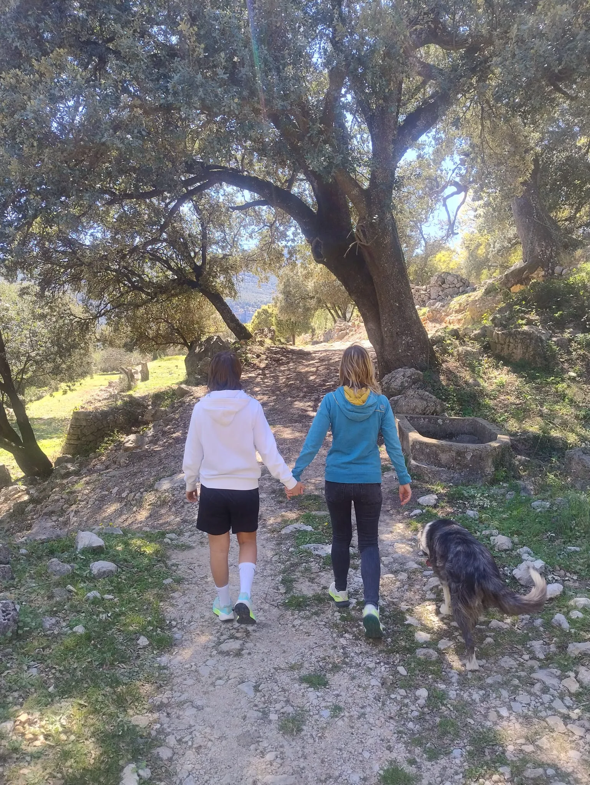

Teràpia caminant
Un espai terapèutic en moviment, en contacte amb la natura i amb un ritme més orgànic.
Les sessions caminant poden ajudar a pensar, respirar, regular-se i donar lloc a la paraula des d'un entorn menys rígid. El moviment pot facilitar l'expressió emocional i la connexió amb el propi procés.
Aquest format es planteja sempre valorant si s'ajusta a la necessitat de la persona i al moment que està vivint.